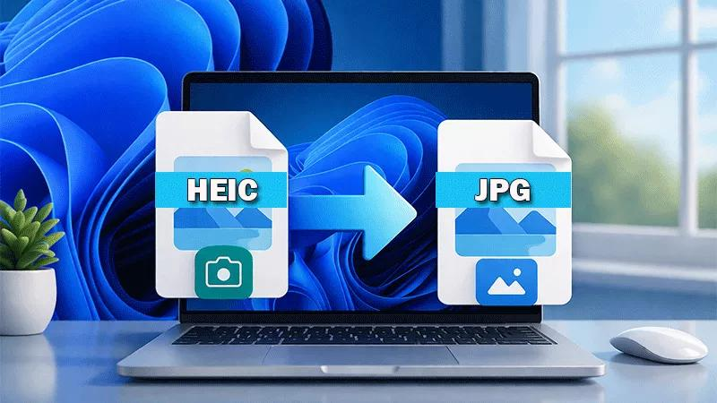
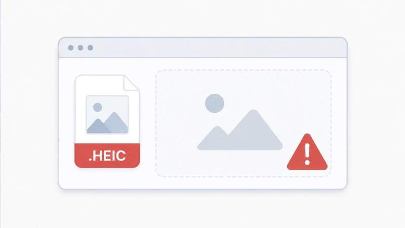
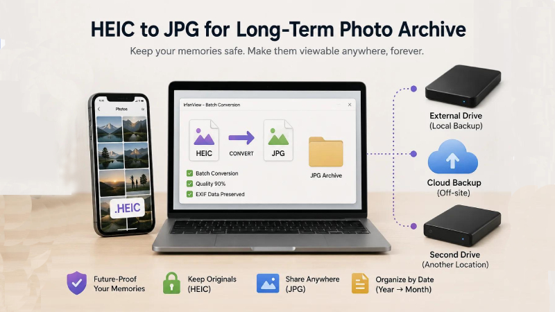

You transfer a photo from your iPhone to your Windows computer, double-click it, and nothing opens. Maybe the Photos app displays an error, the thumbnail is blank, or a website refuses to accept the image because it only supports JPG.
If this sounds familiar, the problem may be the HEIC image format, rather than a damaged photo.
HEIC is commonly used by Apple devices because it can store photos efficiently while preserving image quality. However, not every Windows computer, older application, or online upload form supports it. Microsoft explains that some Windows devices need additional codecs to open HEIF and HEIC media.
The good news is that you usually have three practical options: enable compatible Windows support, convert the photo to JPG, or change how your iPhone captures or transfers future images.
This guide walks you through each option, explains when conversion is necessary, and shows how to protect your original photos.
Quick answer: How do you fix HEIC photos that won't open?
Try these steps in order:
- Confirm that the file actually ends in
.heicor.heif. - Try opening it in an updated application that supports the format.
- If Windows Photos requests an extension, check the relevant HEIF support in the Microsoft Store.
- If the image needs to work in an older application or website, convert a copy to JPG.
- Keep the original HEIC file until you have checked the converted image.
- If the problem happens with every new photo, adjust your iPhone's capture or transfer settings.
Which fix should you choose?
• Want to keep using HEIC on your PC? Try installing the required Windows support.
• Need to upload a photo to a form or older application? JPG is usually the more compatible choice.
• Want to avoid the issue with future photos? Consider changing the iPhone's format settings.
1. What is HEIC, and why won't Windows open it?
HEIC is a file extension commonly associated with images stored using the High Efficiency Image File Format (HEIF). Apple introduced support for HEIF images and HEVC video in its operating systems to provide efficient storage and compatibility across supported devices.
The challenge is that different applications support different formats. Your iPhone may display a photo perfectly while an older Windows image viewer or website upload form does not recognize it.
Common symptoms include:
- Windows Photos says an extension is needed.
- Double-clicking the photo produces an error.
- File Explorer does not display the expected preview.
- An older image editor cannot import the file.
- A job application, school portal, or other website accepts JPG but rejects HEIC.
- An image-sharing workflow behaves differently on your PC than on your phone.
These symptoms do not automatically mean that the photo is corrupted. First, check whether the application supports the format.
2. Check compatibility before converting the photo
Before changing the image, identify where it needs to work.
Windows Photos or File Explorer
If HEIC images fail to open or preview, check the installed image extensions and application updates.
A website or upload form
If the site explicitly requires JPG or JPEG, installing a Windows extension will not necessarily solve the problem. Convert the image to an accepted format.
An older editor or business application
Check the application's supported formats. Converting a copy to JPG may be easier than changing the entire computer's configuration.
Check the file extension
On Windows:
- Open File Explorer.
- Find the image you want to open.
- Enable file-name extensions in the View settings if they are hidden.
- Check whether the filename ends in
.heic,.heif,.jpg, or.jpeg.
Remember that JPG and JPEG refer to the same widely used image format. Renaming photo.heic to photo.jpg does not convert the image; the file's actual content must be converted.
3. Fix HEIC support on Windows 10 or Windows 11
If you want to open the original HEIC file directly, try enabling compatible image support before converting it.
Step 1: Open the Microsoft Store
Open the Microsoft Store on your Windows PC and search for HEIF Image Extensions. Check that the listing is from Microsoft before installing it.
Microsoft's support guidance identifies HEIF Image Extensions as a way to add support for HEIF images. Its older troubleshooting instructions also discuss HEVC Video Extensions for systems that need additional codec support. The exact requirement can depend on the system and file.
Step 2: Install the relevant extension
Follow the Store's installation instructions. If Windows continues to display an extension or codec error, read the exact message and check Microsoft's current guidance for the relevant extension.
Do not download unknown codec installers from random websites just to open one photo.
Step 3: Reopen the photo
Close the Photos app and open it again. Then try the original HEIC image.
If it opens, you can keep the original format for applications that support it. If a website still rejects the image, move to the JPG conversion method below.
Note: Enabling HEIC support in Windows does not force every third-party application or website to support HEIC.
4. Convert HEIC to JPG for broader compatibility
If you need to upload a photo to a form, attach it to an email, or use it in an older application, converting a copy to JPG is often the most straightforward solution.
JPG is supported by a wide range of operating systems, browsers, image editors, and online services. The destination's own requirements still matter, especially when it specifies a maximum file size or image dimensions.

How to convert a HEIC photo using QuickToolsPK
Use the QuickToolsPK HEIC to JPG tool if its current implementation supports your file and meets your privacy requirements.
Before uploading personal photos, confirm how the live tool processes files. Do not assume that conversion happens locally unless that behavior has been verified.
Follow these steps:
- Make a backup of the original HEIC photo.
- Open QuickToolsPK's HEIC to JPG tool.
- Select the HEIC image from your computer.
- Choose JPG as the output format if the tool offers format selection.
- Start the conversion and download the result.
- Open the resulting JPG in Windows Photos.
- Upload the JPG to your intended website or application and confirm it meets the site's requirements.
If the upload still fails, check the site's file-size limit, maximum dimensions, and accepted extensions. Some forms also require a particular aspect ratio or minimum resolution.
5. Preserve the original photo before conversion
One common mistake is replacing or deleting the original file as soon as the JPG appears.
Instead, keep both versions until you have verified the result.
For example, your folder could contain:
holiday-photo-original.heicholiday-photo-upload.jpg
This makes it easier to return to the original if the JPG is too small, has an unexpected color appearance, or does not meet the target site's requirements.
It also helps when you later need to edit the image or share it with someone whose software supports HEIC.

Why keeping the original matters
HEIC and JPG use different compression methods. JPG conversion can introduce some compression loss, depending on the converter's settings. The converted file may also be larger or smaller than the original.
For important photos, compare the two versions before deleting anything. Keep the original at full resolution if you may need it for future editing, printing, or archiving.
6. Will converting HEIC to JPG reduce image quality?
It can, but the amount of visible difference depends on the source image and conversion settings.
HEIC is designed to store images efficiently. JPG is widely compatible, but it commonly uses lossy compression. Repeatedly saving a JPG at lower quality can introduce additional artifacts.
The final file size and appearance depend on several factors:
- The original photo's resolution and detail
- The JPG quality setting
- The converter's implementation
- Whether the image is resized during conversion
- Whether color profiles or HDR information are preserved
For an ordinary website upload, a well-converted JPG may look very similar to the original. However, do not assume that every converter preserves HDR appearance, metadata, or every image feature.
How to check the converted result
- Open the original and converted images side by side.
- Compare faces, text, edges, fine details, and gradients.
- Confirm that the JPG dimensions are appropriate for the intended use.
- Check the output file size against the upload limit.
- Verify that the colors and brightness look acceptable.
- Keep the original if the result does not meet your needs.
For a passport photo, ID image, professional portfolio, or important family photo, check the output carefully rather than relying only on the filename or file size.
7. Stop future iPhone photos from causing the same problem
If you frequently transfer iPhone photos to a Windows PC, you may be able to change how future images are captured or transferred.
Apple's current support instructions describe two relevant settings. The available options can vary by device and operating-system version.
Option A: Capture new photos in a more compatible format
On supported iPhones:
- Open Settings.
- Tap Camera.
- Open Formats.
- Select Most Compatible, if available.
This setting makes new photos use JPEG instead of HEIF/HEIC. It does not automatically convert every existing photo in your library.
Trade-off: JPEG files may take up more storage space than comparable HEIC files.
Option B: Change the format when transferring to a PC
On supported iOS versions, check:
- Open Settings.
- Find Photos or the relevant photo-transfer settings.
- Look for Transfer to Mac or PC.
- Choose Automatic, if available.
Apple explains that images may be converted to a more compatible format during certain transfers. If you want to preserve the original format during transfer, the available settings may also include an option to keep originals.
These settings affect supported transfer workflows; they do not guarantee that every third-party sharing app or website will convert images the same way.
8. HEIC photo compatibility for users in the USA, UK, Canada, and Australia
If you use an iPhone in the United States, United Kingdom, Canada, Australia, or another country, the basic file-format issue is the same: compatibility depends on the device, application, and destination website rather than your country.
However, the problem often becomes noticeable when you submit photos to different online services.
- USA: A job application, school portal, insurance website, or other form may specify JPG/JPEG uploads. Check its file-size and image-dimension requirements.
- UK: When submitting a profile photo or document image, confirm the portal's accepted file types before converting.
- Canada: If a government, employer, or education portal provides specific photo-upload instructions, follow its stated format and size limits.
- Australia: For online applications and document submissions, check whether the service accepts HEIC or requires JPG/JPEG.
- Other countries: The same rule applies internationally: use the format explicitly requested by the destination.
These are examples of common upload scenarios, not a claim that every website in these countries rejects HEIC. Always check the specific form's instructions.
9. Common HEIC conversion mistakes to avoid
- Mistake 1: Renaming the extension. Changing
.heicto.jpgdoes not change the image encoding. Use a real converter. - Mistake 2: Deleting the original immediately. Keep the HEIC file until the converted JPG opens and uploads correctly.
- Mistake 3: Assuming Windows support means every website supports HEIC. A Windows extension may let an application open the original, but the upload form may still accept only JPG or PNG.
- Mistake 4: Ignoring the file-size limit. A JPG can still be too large for an upload form. If necessary, resize or compress a copy while preserving sufficient resolution.
- Mistake 5: Installing codecs from untrusted websites. Use the official Microsoft Store or trusted vendor documentation for Windows extensions.
- Mistake 6: Assuming every converter preserves every image feature. Conversion can change compression, metadata, color handling, or HDR appearance. Review the output, especially when the image is important.
- Mistake 7: Uploading sensitive images without checking privacy. Identity documents, medical images, private family photos, and business documents deserve extra caution. Before using an online converter, check whether files are processed locally or sent to a server, and review the provider's retention policy.
10. Quick troubleshooting table
| Problem | What to try |
|---|---|
| Windows Photos says an extension is needed | Check HEIF Image Extensions and the exact codec message. |
| HEIC opens on the iPhone but not the PC | Try a compatible Windows application or convert a copy to JPG. |
| A website rejects the image | Check accepted file types and convert to the required format. |
| The JPG upload is too large | Resize or compress a copy to meet the site's limit. |
| The converted image looks different | Compare dimensions, quality settings, color appearance, and the original. |
| Future transfers keep arriving as HEIC | Review the iPhone's camera format and transfer settings. |
| A converter asks you to upload a sensitive photo | Review the tool's processing method and privacy policy first. |
Frequently asked questions
Why won't my iPhone photos open on Windows 11?
How do I open HEIC files on Windows 10?
Is HEIC better than JPG?
Does converting HEIC to JPG lower quality?
Can I convert HEIC to JPG without changing the original?
Why does my website reject HEIC when Windows can open it?
Will changing my iPhone camera settings convert my old HEIC photos?
Can I use an online HEIC to JPG converter for private photos?
Conclusion
When HEIC photos won't open on Windows, first check compatibility rather than assuming the file is damaged. Installing the relevant Windows extension may help you open the original, while converting a copy to JPG is often the practical solution for older applications and websites.
Keep your original photo, review the converted image, and adjust your iPhone settings if you regularly encounter the same issue. Whether you're in the USA, UK, Canada, Australia, or elsewhere, the best fix is the one that meets the destination's requirements without unnecessarily sacrificing quality or privacy.
Need a compatible image for an upload form? Use QuickToolsPK's HEIC to JPG tool after confirming its current functionality and privacy details.